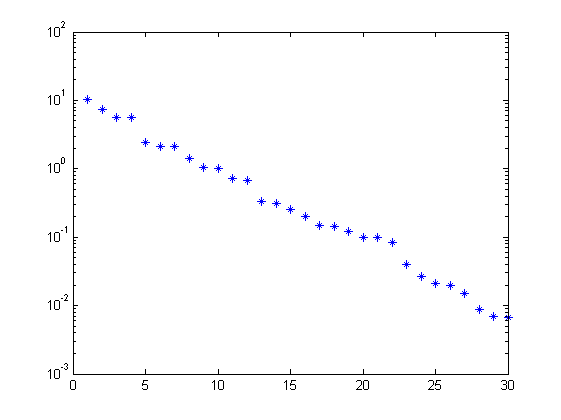
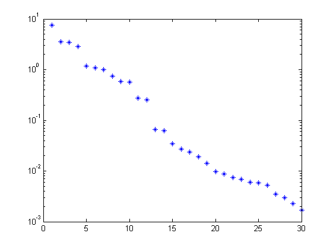
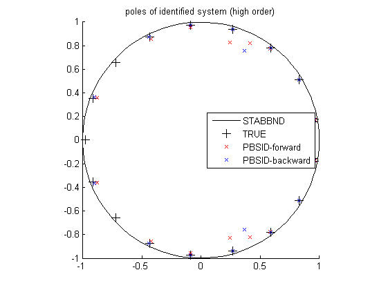
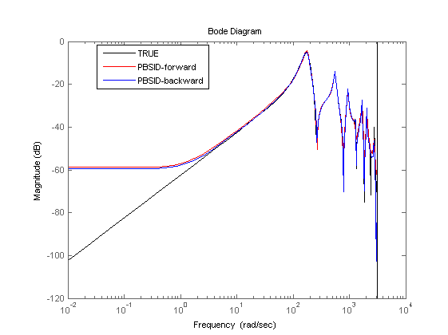
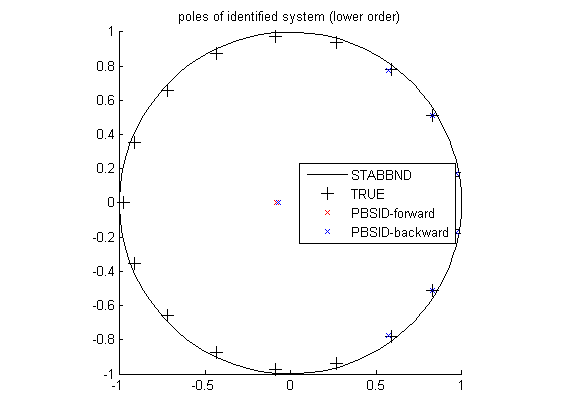
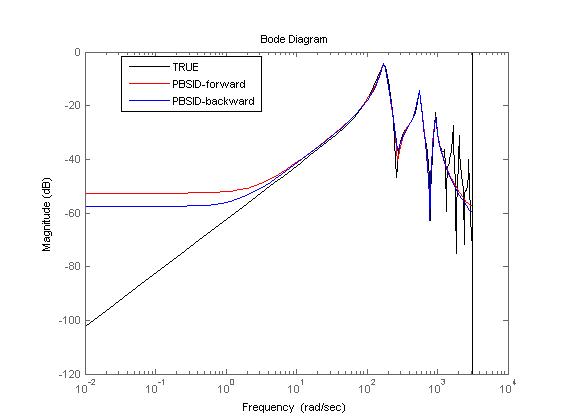

Contents
Example 3: High-order LTI model of acoustical duct
close all; clear; clc;
The high-order LTI model (acoustical duct) with coloured process noise
% acoustical duct model Ts = 0.001; a = [1, -1.8937219532483e0, 9.2020408176247e-1, 8.4317527635809e-13,... -6.9870644340972e-13, 3.2703011891141e-13, -2.8053825784320e-14,... -4.8518619047975e-13, 9.0515016323085e-13, -8.9573340462955e-13,... 6.2104932381850e-13, -4.0655443037130e-13, 3.8448359402553e-13,... -4.9321540807220e-13, 5.3571245452629e-13, -6.7043859898372e-13,... 6.5050860651120e-13, 6.6499999999978e-1, -1.2593250989101e0,... 6.1193571437226e-1]; b = [0, -5.6534330123106e-6, 5.6870704280702e-6, 7.7870811926239e-3,... 1.3389477125431e-3, -9.1260667240191e-3, 1.4435759589218e-8,... -1.2021568096247e-8, -2.2746529807395e-9, 6.3067990166664e-9,... 9.1305924779895e-10, -7.5200613526843e-9, 1.9549739577695e-9,... 1.3891832078608e-8, -1.6372496840947e-8, 9.0003511972213e-3,... -1.9333235957678e-3, -7.0669966879457e-3, -3.7850561971775e-6,... 3.7590122810601e-6]; c = [0, -5.65645330123106e-6, 5.345344280702e-6, 7.45341926239e-3,... 2.3389477125431e-3, -9.5480667240191e-3, 1.545435759589218e-8,... -1.2343468096247e-8, -2.534549807395e-9, 4.454930166664e-9,... 9.342424779895e-10, -7.2342313526843e-9, 1.9549739577695e-9,... 1.564565078608e-8, -3.1272496840947e-8, 9.345511972213e-3,... -1.876875957678e-3, -6.0669966879457e-3, -3.54561971775e-6,... 3.7590122810601e-6]; Gu = tf(b,a,Ts,'Variable','q'); Gv = tf(c,a,Ts,'Variable','q'); OL = minreal([Gu Gv]);
High-order identification experiment
Simulation of the model in open loop
% input signals N = 5000; r = idinput(N,'prbs'); t = (0:Ts:(Ts*(N-1)))'; % noise e = 0.1.*randn(N,1); % noise signal % simulation y0 = lsim(OL,[r zeros(N,1)],t); y = lsim(OL,[r e],t); disp('Signal to noise ratio (SNR) (high order)') snr(y,y0)
Warning: The PRBS signal delivered is the 5000 first values of a full sequence of length 8191. Signal to noise ratio (SNR) (high order) ans = 22.7082
Identification of the model in open loop
% parameters n = 19; % order of system f = 30; % future window size p = 30; % past window size % PBSID-forward (open loop) [S,X] = dordvarx(r,y,f,p,'tikh','gcv'); figure, semilogy(S,'*'); x = dmodx(X,n); [Ai,Bi,Ci,Di,Ki] = dx2abcdk(x,r,y,f,p); % PBSID-backward (open loop) [S,X] = dordvarx_back(r,y,f,p,'tikh','gcv'); figure, semilogy(S,'*'); x = dmodx(X,n); [Av,Bv,Cv,Dv,Kv] = dx2abcdk_back(x,r,y,f,p); 
Verification results
% verification using variance accounted for (VAF) (open loop) OLi = ss(Ai,Bi,Ci,Di,Ts); OLv = ss(Av,Bv,Cv,Dv,Ts); yr = lsim(OL(1,1),r,t); yi = lsim(OLi,r,t); yv = lsim(OLv,r,t); disp('VAF with PBSIDopt-forward (high order)') vaf(yr,yi) disp('VAF with PBSIDopt-backward (high order)') vaf(yr,yv)
VAF with PBSIDopt-forward (high order) ans = 99.5125 VAF with PBSIDopt-backward (high order) ans = 99.8294
Identification results
% plot eigenvalues (high order) figure hold on title('poles of identified system (high order)') [cx,cy] = pol2cart(linspace(0,2*pi),ones(1,100)); plot(cx,cy,'k'); plot(real(pole(OL)),imag(pole(OL)),'k+','LineWidth',0.1,'MarkerEdgeColor','k','MarkerFaceColor','k','MarkerSize',10); plot(real(eig(Ai)),imag(eig(Ai)),'rx'); plot(real(eig(Av)),imag(eig(Av)),'bx'); axis([-1 1 -1 1]); axis square legend('STABBND','TRUE','PBSID-forward','PBSID-backward','Location','East'); hold off % simulation figure, bodemag(OL(1,1),'k',OLi,'r',OLv,'b'); legend('TRUE','PBSID-forward','PBSID-backward','Location','Best'); 
Lower-order identification experiment
Identification of the model in open loop
% parameters n = 9; % order of system f = 30; % future window size p = 30; % past window size % PBSID-forward (lower order) [S,X] = dordvarx(r,y,f,p,'tikh','gcv'); x = dmodx(X,n); [Ai,Bi,Ci,Di,Ki] = dx2abcdk(x,r,y,f,p); % PBSID-backward (lower order) [S,X] = dordvarx_back(r,y,f,p,'tikh','gcv'); x = dmodx(X,n); [Av,Bv,Cv,Dv,Kv] = dx2abcdk_back(x,r,y,f,p);
Verification results
% verification using variance accounted for (VAF) (lower order) OLi = ss(Ai,Bi,Ci,Di,Ts); OLv = ss(Av,Bv,Cv,Dv,Ts); yr = lsim(OL(1,1),r,t); yi = lsim(OLi,r,t); yv = lsim(OLv,r,t); disp('VAF with PBSIDopt-forward (lower order)') vaf(yr,yi) disp('VAF with PBSIDopt-backward (lower order)') vaf(yr,yv)
VAF with PBSIDopt-forward (lower order) ans = 97.5267 VAF with PBSIDopt-backward (lower order) ans = 96.1242
Identification results
% plot eigenvalues (lower order) figure hold on title('poles of identified system (lower order)') [cx,cy] = pol2cart(linspace(0,2*pi),ones(1,100)); plot(cx,cy,'k'); plot(real(pole(OL)),imag(pole(OL)),'k+','LineWidth',0.1,'MarkerEdgeColor','k','MarkerFaceColor','k','MarkerSize',10); plot(real(eig(Ai)),imag(eig(Ai)),'rx'); plot(real(eig(Av)),imag(eig(Av)),'bx'); axis([-1 1 -1 1]); axis square legend('STABBND','TRUE','PBSID-forward','PBSID-backward','Location','East'); hold off % simulation figure, bodemag(OL(1,1),'k',OLi,'r',OLv,'b'); legend('TRUE','PBSID-forward','PBSID-backward','Location','Best'); 